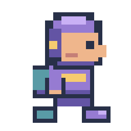

拡大と原寸 v1

phase0-luu-walk

8 ファイル
32 × 32、透過あり
32 × 32、透過あり
32 × 32、透過あり
32 × 32、透過あり
128 × 32、透過あり
4 コマの範囲・基準点・表示時間・画素を照合
2 本
GIF89a / 32 × 32
4 コマ
120 ms / 110 ms / 120 ms / 110 ms
GIF89a / 256 × 256
4 コマ
120 ms / 110 ms / 120 ms / 110 ms
256 × 256
「この v1 を採用」
「テンポをもう少し遅くして」